在windows下安装Vagrant并搭建docker环境
Vagrant
安装vagrant
安装virtualBox
准备CentOs7，
在工作区打开命令行，输入以下命令（Vagrant-CentOS-7.box在工作区中）
vagrant box add centos7.2 Vagrant-CentOS-7.box出现以下提示表示安装成功
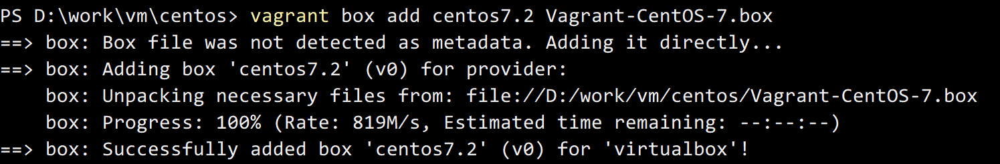
如果没有准备镜像，可以输入以下命令下载：
vagrant box add centos/6 # for CentOS Linux 6vagrant box add centos/7 # for CentOS Linux 7(也可以到官方镜像库下载：http://www.vagrantbox.es/ )
初始化
vagrant init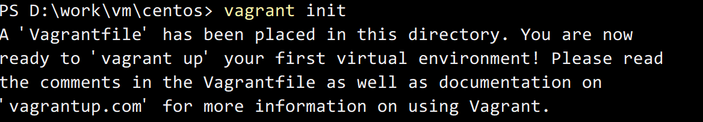
生成Vagrantfile文件后，修改box名称
config.vm.box = “centos7.2”
启动box
vagrant up经过漫长的等待… …
进入VirtualBox，就可以看到运行中的centos
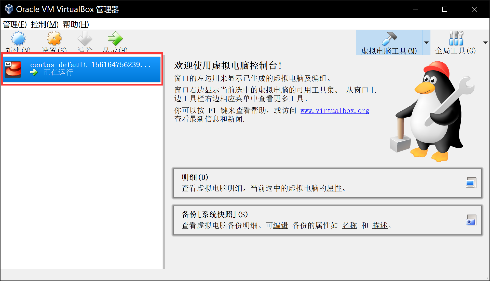
7.ssh命令链接 vagrant ssh
Docker
启动vagrant之后，开始搭建docker环境
切换root用户
安装docker
yum install -y docker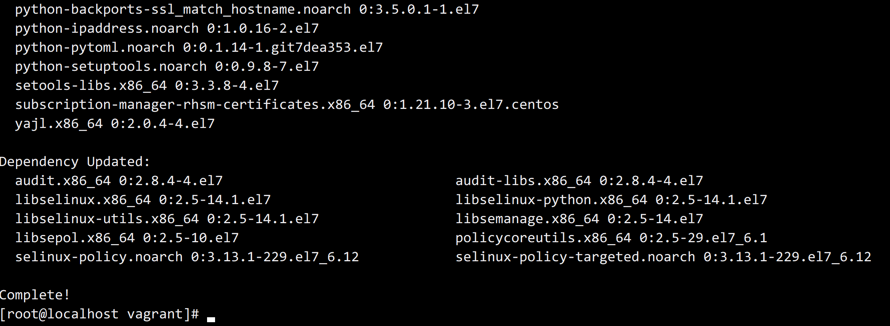
Complete，安装完成，启动docker
systemctl start docker设置启动虚拟机时自动启动
systemctl enable docker查看docker版本和信息
docker versiondocker info创建一个新的容器
docker run -ti centos bash从centos中创建容器创建并启动之后，会分配唯一的id。
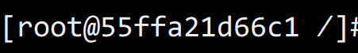
容器创建后，安装wget工具
yum install -y wget在容器中创建镜像文件
先了解一下
docker commit命令[root@localhost vagrant]# docker commit --helpUsage: docker commit [OPTIONS] CONTAINER [REPOSITORY[:TAG]]options选项如下：
-a：提交的镜像作者；-c：使用Dockerfile指令来创建镜像；-m：提交备注说明；-p：提交时，容器暂停。docker commit -a:cjluo 55ffa21d66c1 image:1.0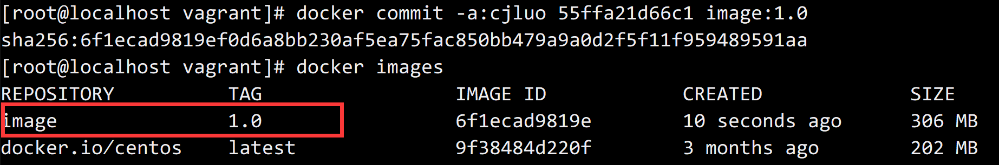
此时启动镜像，已经包含了之前安装的wget
用Dockerfile创建镜像
Dockerfile是什么？
- Dockerfile是Docker的RPM Spec文件
- Dockerfile是一个包含用户创建的镜像所有指令的文本文件
- Dockerfile中的指令指定在创建Docker镜像时做什么
- Docker读取Dockerfile的指令创建Docker镜像
- 每个指令都将创建新的Docker镜像层
创建一个简单的镜像
1 | FROM centos |
第一行表示基础镜像是centos
第二行是镜像执行的指令
新建指令：docker build .
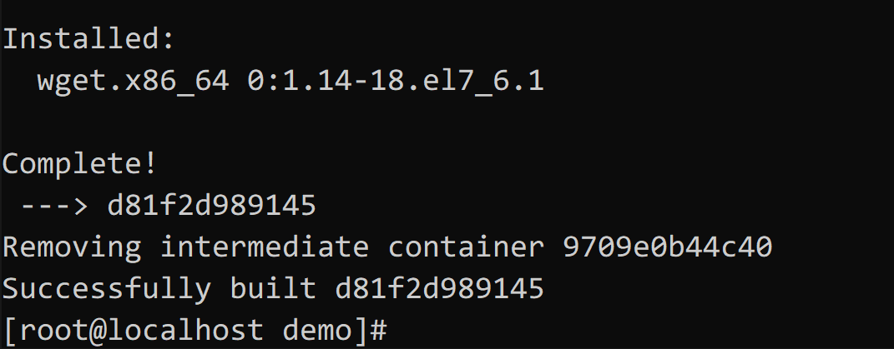
创建过程中会生成临时容器9709e0b44c40，创建成功后会删除临时容器，最终的容器是d81f2d989145
查看生成的镜像，名称和tag都是none，给它加上。
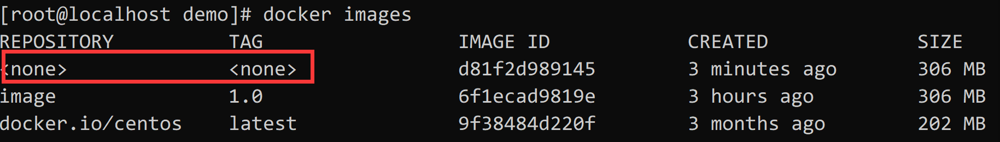
docker tag d81f2d989145 myimage:1.0
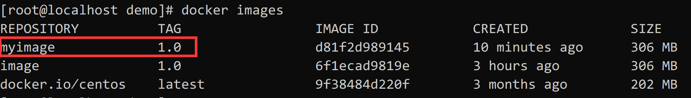
也可以在生成镜像的命令上直接指定 docker build -t myimage:1.0，这样生成的镜像直接就带上了名称和tag
从docker仓库中查找镜像并拉取
例如需要一个包含nginx的镜像
docker search nginx
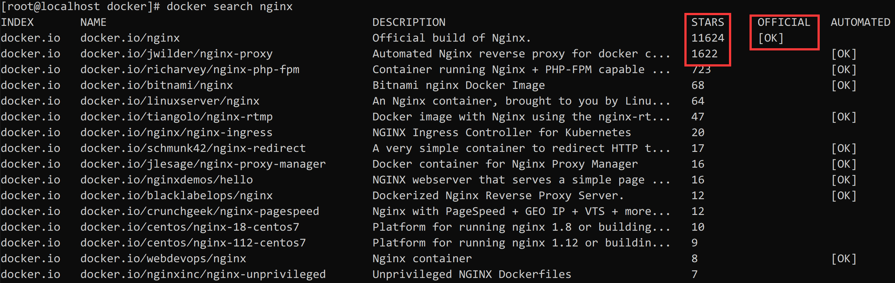
通过search从docker仓库查找，熟悉git的话，STARS不用多说就知道是什么意思，OFFICIAL = OK表示该镜像是一个官方镜像。
docker pull nginx
从官方镜像拉取，命令不带tag表示拉取最新版本的镜像
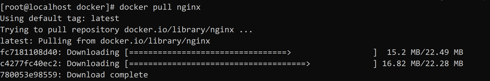